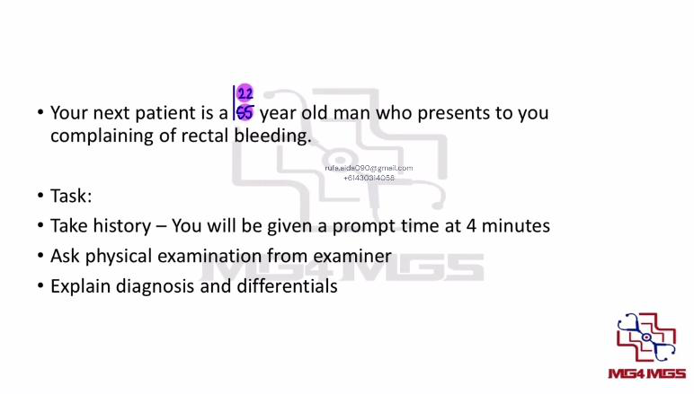
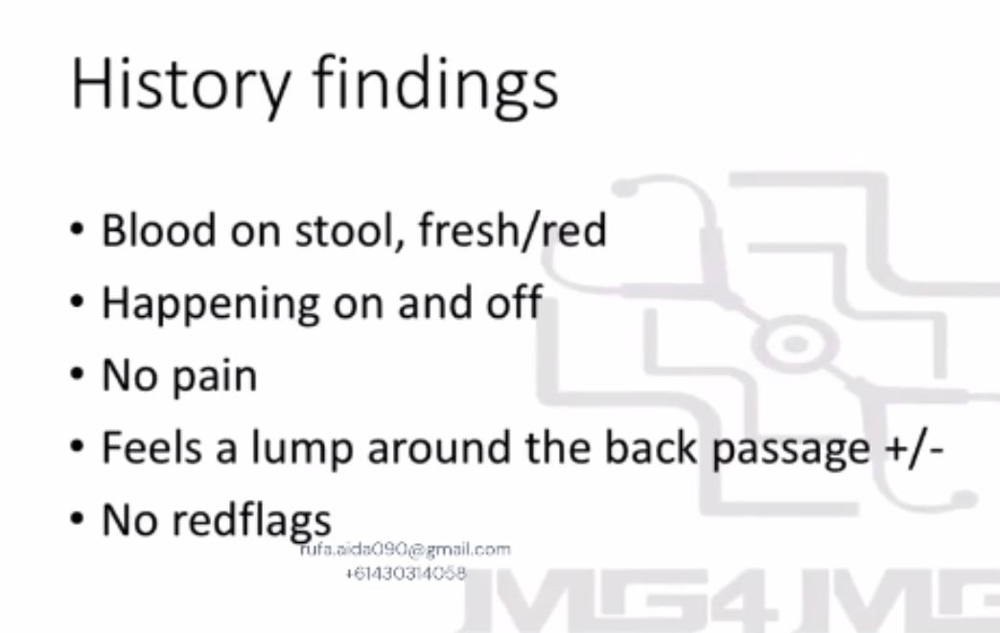
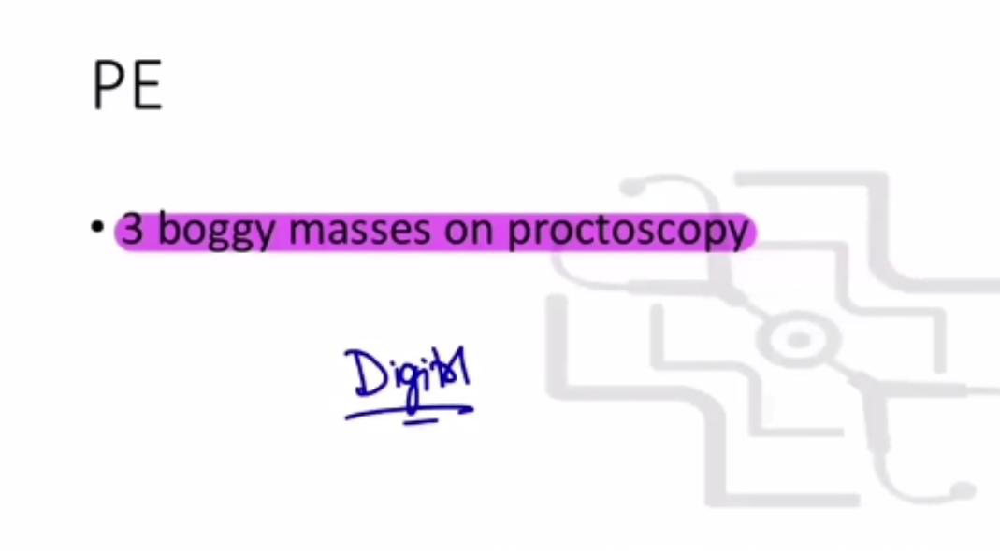
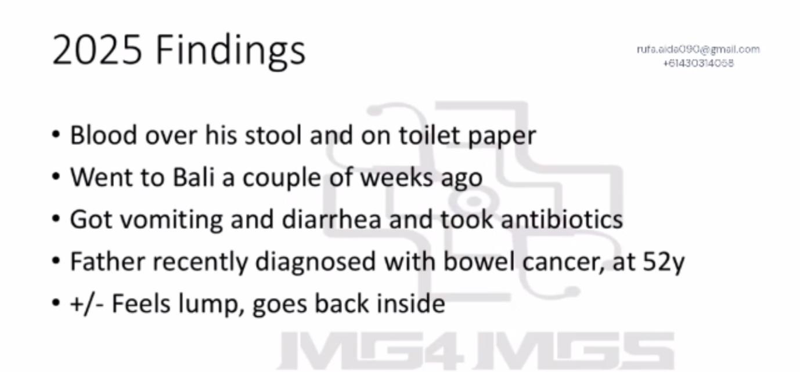
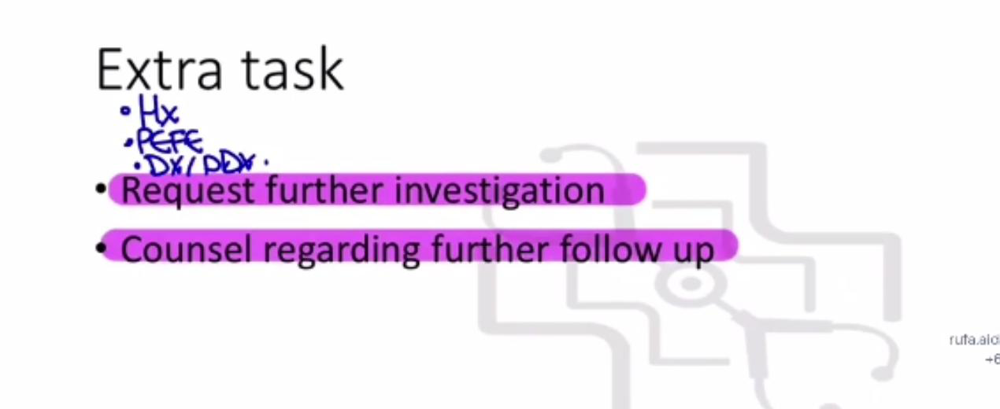
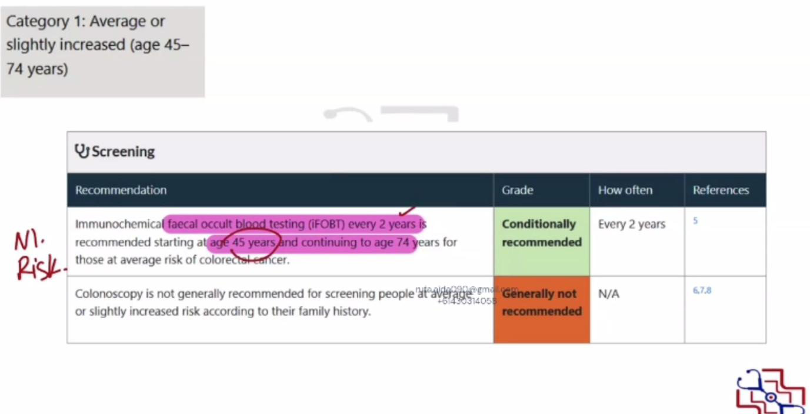
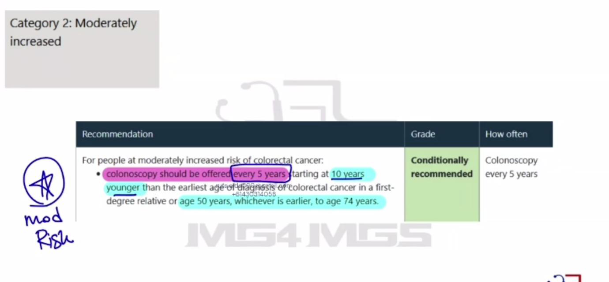
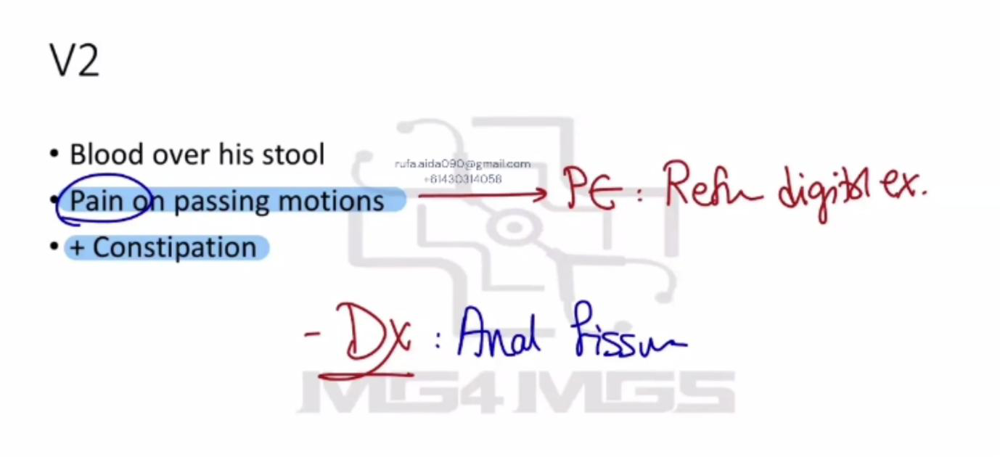

Source: Dr. Amir workshop — GIT 2026 / class 7 Lower GI (Aug 2026 drop) · Specialty: gastroenterology
Rectal bleeding stations are typically haemorrhoids, but from 2025 the AMC has added varied and multiple findings to prevent candidates relying on recalls. The examiner wants a full differential worked through, not just haemorrhoid risk factors. Anal fissure is painful; haemorrhoids are usually painless.
1. Introduction and open questions - patient often states "I've noticed blood in my stool." Respond to the concern.
2. Explore the complaint:
3. Differential-directed questions:
Do not fall into the trap of assuming haemorrhoids and only asking risk factors (heavy lifting, chronic cough, chronic constipation) - actively exclude the other differentials.
General appearance (pallor, cachexia, level of consciousness) and vital signs.
Abdominal examination (core): inspection (movement with respiration, distension); palpation (masses, tenderness - bowel-cancer mass, hepatomegaly in liver disease); auscultation; inguinal area.
Rectal examination (consent + chaperone): inspect for visible fissure (do not perform digital exam if a painful fissure is seen), skin tags (repeated fissures), redness/rashes, lumps/swellings (haemorrhoids, prolapse, perianal abscess), discharge and bleeding. If the patient is not in pain, proceed to digital examination for masses (haemorrhoids, cancer) and tenderness.
Office test - proctoscopy/anoscopy: often done in rural settings. Some stations report boggy masses on proctoscopy that were not felt on digital exam, so always ask for proctoscopy findings.
Haemorrhoids explanation: "In the back passage there are some blood vessels; when they become swollen we call them haemorrhoids. I'm making this diagnosis because you felt a lump / I saw a lump on examination, and you have no red flags." Always still list the differentials, led by cancer.
Version 2 (anal fissure): some patients refuse DRE due to pain - this usually indicates anal fissure. Explain: "a small, superficial tear in the back passage, usually caused by constipation, that causes bleeding." Then cover the remaining differentials.
Investigations: colonoscopy to exclude proximal pathology and confirm there are no problems elsewhere in the bowel (see correction re: diagnosing haemorrhoids).
If the patient has a first-degree relative with colorectal cancer, counsel on their increased risk and screening. In the recall scenario the father's cancer was diagnosed at 52 years; the notes advise colonoscopy every 5 years starting from age 42 (10 years before the relative's diagnosis, or 50, whichever is earlier). Provide clear follow-up advice (see correction for current Australian risk categories and the National Bowel Cancer Screening Program).








Reviewed by: history-taking-expert (Australian clinical supervisor) · fact-checked against the irStudy medical textbook RAG index.